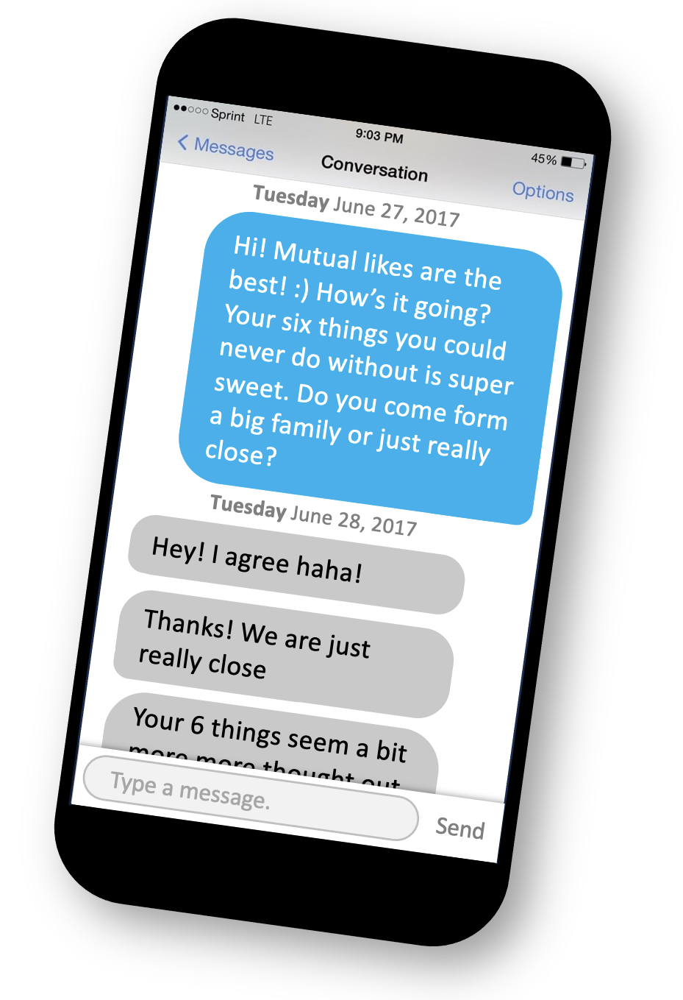
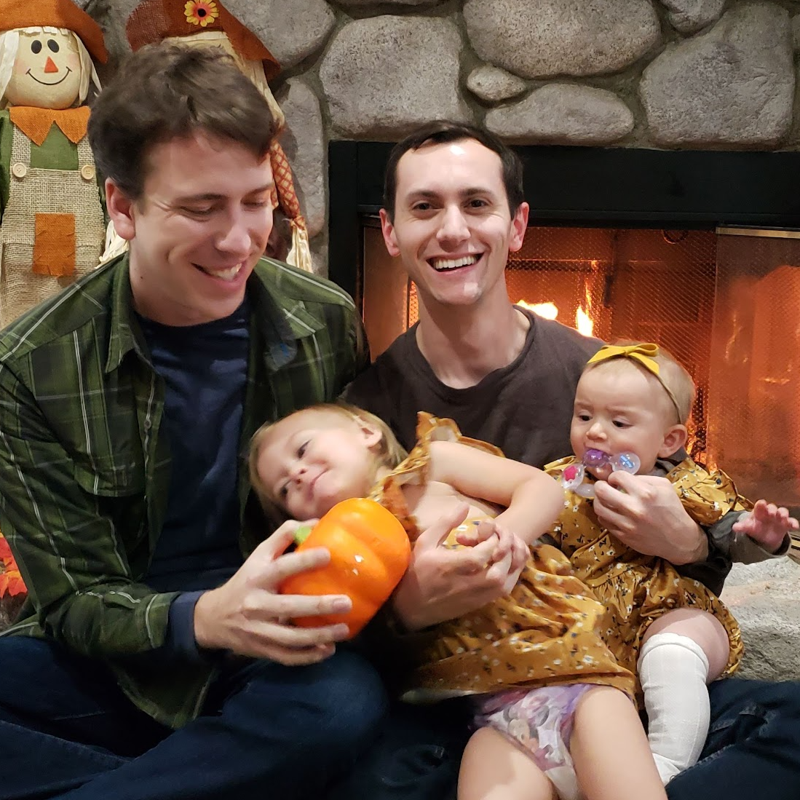
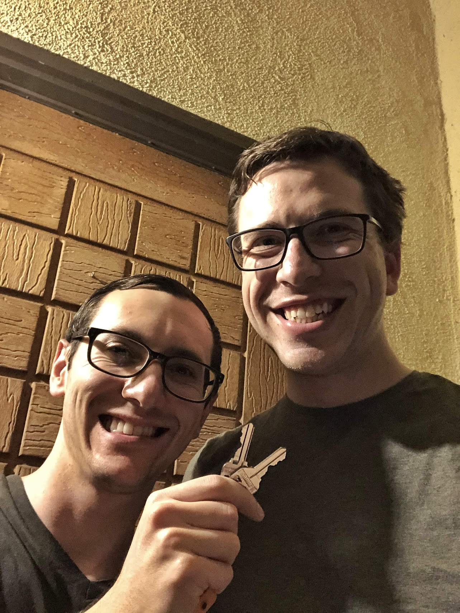
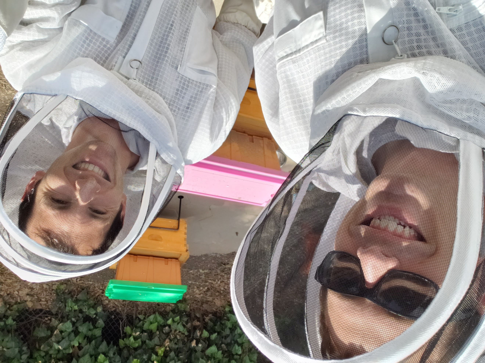
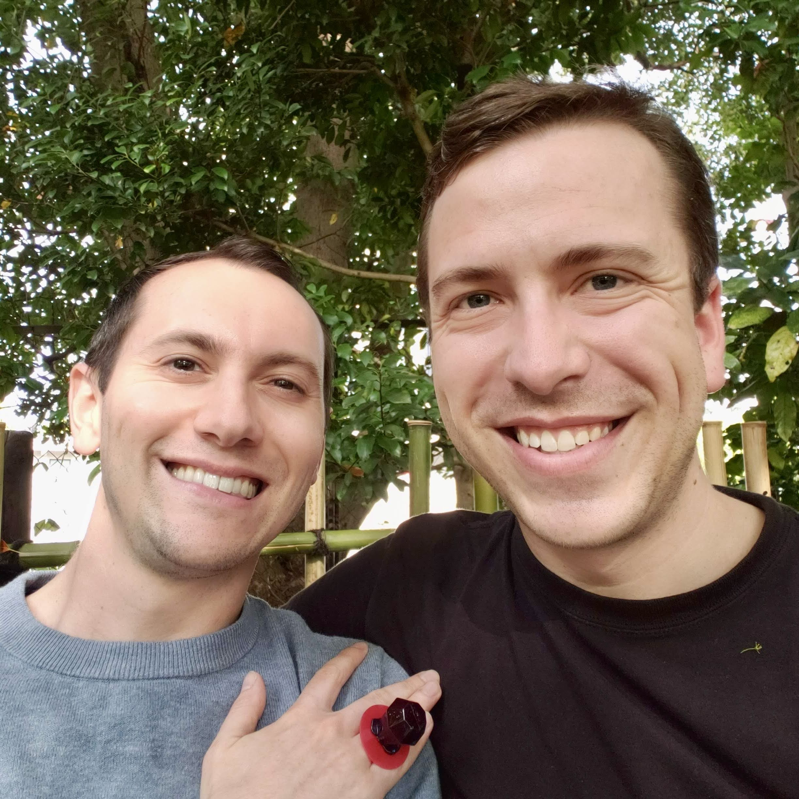

Our Story
Like many couples in this day and age, we met on a dating app. For us, it was OkCupid. After discovering we had mutually "liked" each other we exchanged a few messages before agreeing we wanted to meet each other in person. We had our first date on July 1, 2017 at Jack's restaurant in Pleasant Hill, CA. We have no photos to mark the occasion, but dinner went well, and it was early enough that we decided to extend our date. We found a nearby bowling alley to play a couple of games. Still not ready to call it a night, we again decided to further extend our date and found an ice cream shop to get dessert. We drove back to where we had our dinner and found a Cold Stone Creamery and got our fill of ice cream. We sat outside of the ice cream shop and kept talking. Eventually the ice cream store closed so we moved from their tables and just kept talking. While we covered a lot of topics, probably many of the standard first date awkward type of questions, we also got 'real' with each other very quickly and talked about where we were in our lives, our being 'out,' what we were looking for in a relationship, and somehow managed to not scare each other away. Eventually, somewhat as a matter of practicality, we had to call it a night and parted ways with a flutter in our hearts and a foundation of open communication.
Included in that first conversation was how Tyler was planning on moving back to LA since he was expecting his first niece soon (which was sooner than we all thought). He had planned to transfer with his current company at the time to LA and was in the process of interviewing. But after only the first few dates, Tyler felt like he had found something special and real. So, he decided to cancel his plans to move to LA and his job transfer.
As we got to know each other, we learned that we actually both studied engineering at Cal Poly, San Luis Obispo. We were even more surprised to learn that we were on campus at the same time for two years. Did we ever walk by each other and just not notice? We’ll never know!
Dylan learned that after Cal Poly, Tyler went on to get his master's degree at Stanford before being recruited to work as a consultant where he earned his P.E. in the wastewater industry with Carollo Engineers in Walnut Creek.
Tyler learned that after Dylan graduated from Cal Poly, he started a job at Workday in Pleasanton, and though he studied Electrical Engineering in college, he was now working as a Product Manager in the software industry.

While the beginning of our relationship was full of fond memories, one of the first difficult milestones we encountered together was due to a surgery. Dylan’s tonsils had been posing some health risks to the point that his doctors recommended having them removed — a more complex and painful operation as an adult than compared to when it’s performed on a child. Tyler re-organized his life around being able to be there and support Dylan during his recovery, not once...but twice! For as we drove to the surgery appointment the first time, full of anxiety, we received a call that the surgery would have to be postponed as the doctor was feeling sick. The recovery truly wasn’t fun, but Tyler temporarily moved himself and his cats to Dylan’s house for about two weeks and ensured that Dylan was well cared for, entertained friends and family who visited, and that Dylan got his pain meds every few hours!
It was also around this time that we approached six months of dating, and Tyler’s lease on his apartment was coming up. During a hike in the redwoods, we had a conversation about our relationship. We both liked where things were going, but also didn’t want to rush through it based on some external timeline, i.e., Tyler’s lease agreement. We agreed to keep driving to each other's house and that when the time felt right, even if it meant breaking a new lease agreement (which thankfully he never actually needed to sign), we would progress our relationship on our own timeline. We took this step about six months later, just shy of a year of dating, when Tyler, Dexter, and Casper (Tyler’s cats) moved into Dylan’s home in Oakland.

As time progressed and our lives and relationship continued to grow, everything seemed to be going well, but there was something missing. One of the very first facts Dylan learned about Tyler from his original OKCupid profile was that the three most important things to him were family, family, family, and his family was growing. At this point his sister and brother-in-law had welcomed two new baby girls into the world and we knew that living across the state would mean the majority of our vacations would be traveling to southern California. Even still, we would be missing out on many of the ‘smaller moments’ of the kids growing up. This was a difficult decision for us as a couple to uproot our lives that we built in the Bay Area, but we ultimately decided – together – that it was the right decision for us.
Our minds made up, Tyler found a new job and was hired by The Metropolitan Water District of Southern California, Dylan got approval from his job at Workday to work remotely with the expectation of semi-frequent travel, and we searched around LA to find a local ‘trendy’ spot to live. We landed on Sherman Oaks - close enough to family, Tyler’s work, and also really close to some fun activities, like restaurants, bars, and theaters. We made the move in December 2019. For the first two months, we got settled and had some fun in the trendy city.
Like most people, our lives looked completely different once COVID hit. Dylan went from travelling for work several times a month to having all travel halted, and Tyler shifted (temporarily) from working full-time in the office to full-time at home. The apartment we thought would be a waystation hub for us between exploring the trendy restaurants of the area quickly became our 24/7 living and working arrangement as we tried to stay sane in-between waiting in lines at the grocery store.
During the height of the pandemic, we were really anxious to move into a bigger space that ideally would have a good-sized backyard! In August of 2020, we were extremely fortunate to find our new home in a quaint neighborhood of Woodland Hills. The house needed work and the escrow process was a mess. But it had a great lot size, was in a good neighborhood, and was close to family, shops, the freeway, and Tyler’s work. It really checked all the boxes.


One of the earlier things we started looking into once we had our new backyard was the idea of keeping our own honeybees. We had previously done a one-day workshop about beekeeping in San Francisco, and I guess you could say ‘we got the bug!’ We joined the Los Angeles County Beekeepers Association, and the next spring found ourselves suited up learning the ins and outs with two colonies of bees living in our backyard (in hives we had built by hand). If we haven’t talked your ear off about bees already, consider yourself lucky! But if you are a glutton for punishment and have some time to kill, just get us going and we will gladly inundate you with a ton of facts about these fascinating creatures!
The next big chapter of our, still in relative quarantine life, was construction. We bought our house because we thought it had ‘good bones,’ but we always knew there were some immediate updates we wanted to make. Was all of the headache of living in a construction site for three-quarters of a year worth it? Absolutely! Did we fully understand just how big of a headache it would be? Absolutely not!
We went on our first international trip since COVID in Spring 2023 to Japan, right at the tail end of the cherry blossom season. During the first leg of our journey, while in Tokyo after doing a traditional indigo dyeing workshop, we went to the Botanical Gardens of the Imperial Palace.
(Tyler’s perspective) We arrived at the gates of the Imperial Palace, got our bags checked, showed our tickets, and walked in. To me, it was just another stop in our journey until our fun fancy dinner was planned for later that evening. Little did I know Dylan had a plan. I aimlessly walked from one location to another, but Dylan seemed anxious to get to the garden. We were getting close to our dinner reservation time, so I just thought he wanted to squeeze in the gardens long enough to enjoy the sun before we had to walk to dinner.
We meandered around, saw some nice flowers and ponds and eventually made our way past a waterfall and onto a secluded bench. We were talking about whatever when a small worm fell on me. I tried to figure out what kind of worm this was. Once we were done with that, we set the worm free in the nearby garden. It was at this time Dylan had told me he wrote me a poem. Me, not thinking anything close to a proposal, thought it was strange but sweet. We hadn’t written cute letters or notes to each other in a while. Dylan had prepared a poem on his phone with pictures of us. As he read, I was about to start tearing up, but then he ended the poem with “I choose you!” tossed me a Pokeball, and asked me to open it. I opened it to discover a blue ring pop (my favorite flavor and color) as he proceeded to get down on one knee in front of me. He proposed! I said “Yes!” But then asked if he was serious about twenty times. I was in shock and very excited! For the rest of the evening, we went to our fancy dinner and I still couldn’t believe what had just happened. I was (and still am) so excited to call Dylan my future husband after meeting all those years ago in 2017!
